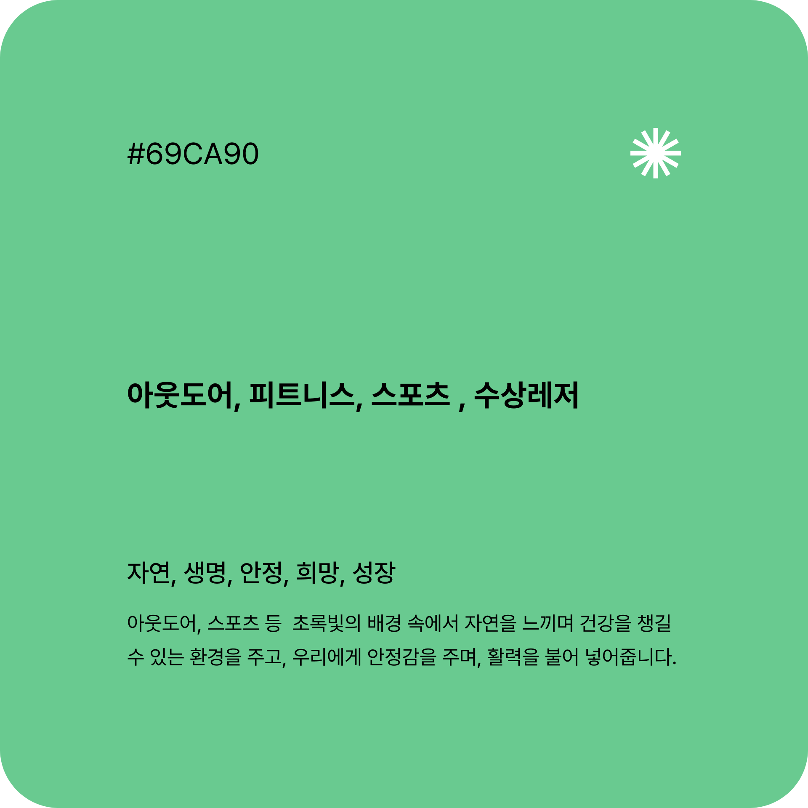

Q
취미 기록 공유 어플리케이션을
사용해 본 경험이 있나요?
- 취미 기록 업로드 60%
- 댓글 남기기 및 좋아요 누르기 12%
- 다른 사용자의 취미 활동 확인 10%
- 그룹/커뮤니티 참여 10%
- 추천 및 영감 얻기 05%
- 기타 03%
공통관심사를 가진 사람들과
공유하고 싶어요!
공유하고 싶어요!
많이 사용하는 소셜미디어 인스타나 페이스북에 취미 게시물을 많이 업로드하면, 주변 친구들이 좋아하지 않아요. 취미는 공통관심사를 가진 사람들과 함께 공유하고 싶어요.
취미를 만들고 싶은데, 정보가
없어서 접근하기 어려워요.
없어서 접근하기 어려워요.
다양한 큐레이션을 통해 정보를 얻어서 새로운 취미를 만들고 싶어요. 정보없이 등록했다가, 취향이 너무 안맞아서 후회한적이 많아요.


